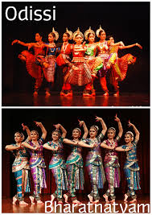

Exploring India's Culture and Heritage
Classical Dance Forms of India
Odissi is one of the oldest and most graceful classical dance forms of India, originating in the eastern state of Odisha. Its roots go back more than 2,000 years, with evidence found in ancient temples like the Udayagiri and Khandagiri caves.
Odissi is one of the oldest and most graceful classical dance forms of India, originating in the eastern state of Odisha. Its roots go back more than 2,000 years, with evidence found in ancient temples like the Udayagiri and Khandagiri caves. Traditionally, Odissi was performed as a devotional offering by Maharis (female temple dancers) in the temples of Odisha, particularly at the famous Jagannath Temple in Puri. These performances were a spiritual practice, intended to express deep devotion to the deities through movement, music, and expression.
Odissi is one of the oldest classical dances of India. It started in the temples of Odisha over 2,000 years ago, where it was performed by Maharis (female temple dancers) as a form of prayer to Lord Jagannath. Later, Gotipuas (young boys dressed as girls) also performed this dance outside temples. During British rule, Odissi declined because temple dancing lost support. But in the 1950s, great gurus like Kelucharan Mohapatra and Sanjukta Panigrahi helped bring it back. They studied old sculptures and texts to revive the dance.
Odissi is known for its lyrical movements, intricate gestures (mudras), and emotive storytelling. A defining characteristic of the dance is the use of tribhangi—a three-bend posture of the body at the neck, torso, and knee—which gives the dance a distinctive elegance and fluidity. Another prominent stance is the chowk, a square-like position symbolizing stability and strength. These postures, combined with rhythmic footwork and expressive facial movements, create a dance style that is both sculptural and emotive.
The dance is performed to Odissi music, a classical genre that blends elements of both Hindustani and Carnatic music traditions. The compositions are usually in Odia or Sanskrit and are rich in devotional themes. Through abhinaya (expressional dance), performers enact stories primarily from Hindu mythology, especially those related to Lord Krishna, Lord Jagannath, and Lord Shiva. The combination of bhava (emotion), raga (melody), and tala (rhythm) creates a deeply spiritual and aesthetic experience for both the performer and the audience.